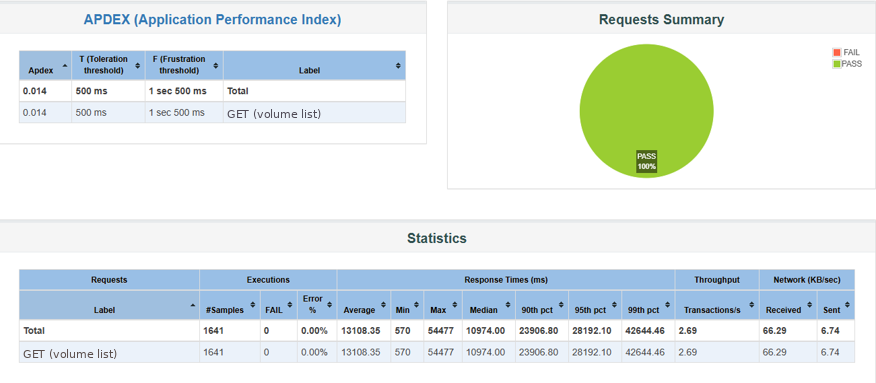
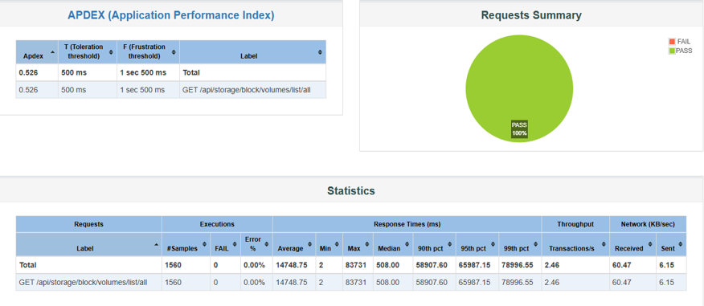
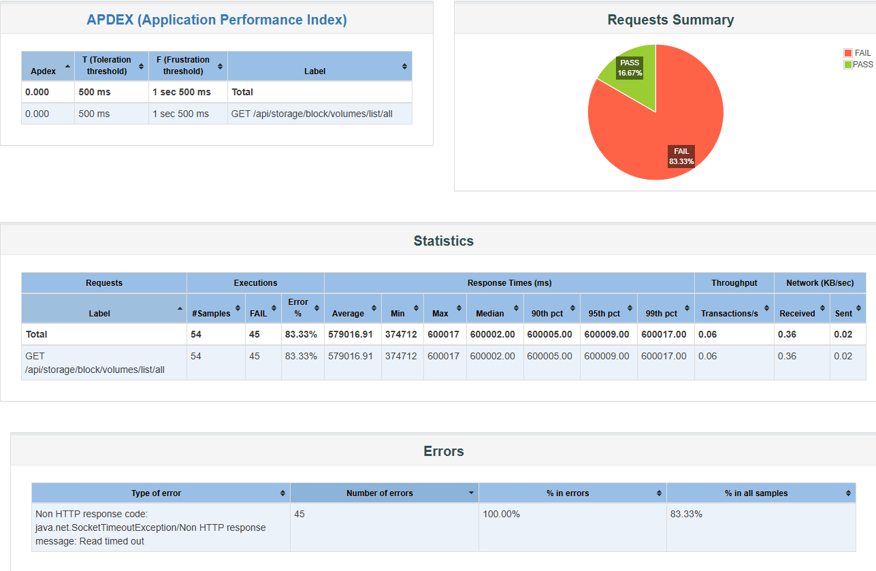
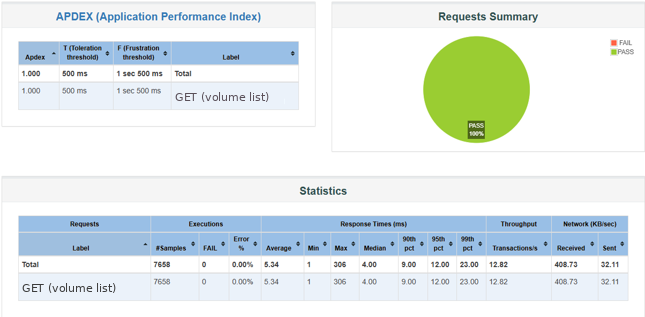

안녕하세요. 사내 cloud 관리 console의 backend를 만들고 있습니다. 볼륨 목록 화면이 10분을 넘겨 timeout이 났습니다. 6번에 5번꼴로 실패하는 화면이었습니다.
고친 뒤에 구성을 6가지로 나눠 같은 부하 조건으로 따로 쟀습니다. 그 표가 이 글의 전부입니다. 어느 수정이 얼마를 줄였는지, 그리고 어느 수정이 오히려 늘렸는지가 단계마다 나옵니다.
이 글의 예상 독자#
- 목록 조회가 느려서
CompletableFuture로 병렬화해 본 적이 있는 분 - cache를 직접 짜면서
ConcurrentHashMap.computeIfAbsent를 써 보신 분 - “thread pool을 키우면 되지 않나”라고 생각해 보신 분
무슨 내용인가요?#
- 6가지 구성을 각각 쟀습니다. 「고치기 전과 후」만 재면 무엇이 효과를 냈는지 모릅니다.
- cache를 고정한 채 순차를 병렬로 바꾸니 중앙값은 21배 빨라지고 P99는 1.9배 느려졌습니다. 「빨라졌다」도 「느려졌다」도 아닙니다.
- 초를 가장 많이 줄인 것은 cache 하나를 넣은 것입니다. 평균 579.0초가 13.1초가 됐습니다. 마지막 23ms는 그 위에 Caffeine의 갱신 방식을 얹어서 나왔습니다.
- 직접 짠 cache에는 결함이 있었습니다. 0건인 답을 담지 않아 없는 것을 매번 다시 물었습니다.
⚠️ 「순차를 병렬로 바꾸면 오히려 느려질 수 있다」는 이야기 자체는 따로 쓴 글에 있습니다. 그쪽이 cache를 고정한 채 순차와 병렬만 비교한 글이고 이 글은 6단계 전체를 봅니다.
사내 제품이라 코드를 그대로 옮기지 않았습니다. 제품명·고객사·내부 주소는 빼고 구조와 수치만 남겼습니다. 클래스 이름은 이야기에 필요한 만큼만 일반화해서 씁니다.
⚠️ 미리 말씀드릴 것이 있습니다. 아래 수치는 격리된 시험 환경에서 JMeter로 잰 값이지 운영 통계가 아닙니다. 「10분」은 부하 시험의 timeout 상한에 걸린 값이고 실제 운영에서 사용자가 10분을 기다렸다는 뜻이 아닙니다.
어떤 화면인가요?#
관리자가 전체 볼륨 목록을 보는 화면입니다. 볼륨 1건마다 이름·크기 말고도 어느 프로젝트 것인지, 어느 볼륨 그룹에 속하는지, 최근 오류 메시지가 있는지를 같이 보여 줍니다. 이 세 가지가 전부 다른 API에서 옵니다.
그래서 목록 한 번을 그리는 데 이런 호출이 나갑니다.
볼륨 N개를 그리려면
프로젝트 조회 N회
볼륨 그룹 조회 N회
오류 메시지 조회 N회
= 외부 API 호출 3N회볼륨이 늘수록 선형으로 느려집니다. 시험 환경에서 이 화면은 10분을 넘겨 timeout이 났고 오류율이 83.3%였습니다.
가설: 순차 호출이 문제인 줄 알았습니다#
3N회를 순서대로 부르고 있었으니 진단은 쉬워 보였습니다.
호출이 순차라서 느린 것이다. 병렬로 바꾸면 N배까지는 아니어도 크게 줄어든다.
CompletableFuture.supplyAsync로 볼륨마다 task를 만들어 executor에 던졌습니다.
그리고 반복 호출을 줄이려고 ConcurrentHashMap으로 cache를 하나 놓았습니다.
같은 그룹 id는 한 번만 부르면 되니까요.
결론: 6단계를 따로 쟀습니다#
한 줄로 줄이면 이렇습니다.
「고치기 전과 후」만 재면 무엇이 효과를 냈는지 모릅니다. 6가지 구성을 차례로 재니 병렬화가 중앙값과 꼬리를 반대 방향으로 움직인다는 것이 드러났습니다.
표를 먼저 보겠습니다. 부하 조건은 6번 모두 같습니다. 중앙값은 요청을 빠른 순서로 줄 세웠을 때 한가운데 있는 값이고 P99는 느린 쪽에서 1%가 걸리는 선입니다. TPS는 초당 끝난 요청 수입니다. 뒤에 나오는 Apdex는 0.5초 안에 끝난 요청과 1.5초 안에 끝난 요청의 비율로, 1에 가까울수록 좋습니다.
가로로 스크롤하면 나머지가 보입니다
6번 모두 동시 사용자 50명 · Ramp-Up 2분 · 지속 10분 · Think Time 2~5초입니다. 바뀐 것은 각 줄의 왼쪽 칸뿐입니다.
읽는 법은 이렇습니다. 가장 나쁜 것은 ①입니다. 평균 579초에 오류율 83.3%로, 사실상 답을 못 주는 상태입니다. cache 하나를 넣은 ②가 그걸 0%로 만듭니다.
그다음이 이 표에서 가장 볼 만한 곳입니다. cache를 고정하고 순차(②)와 병렬(④)만 견주면 두 값이 반대로 움직입니다.
가로로 스크롤하면 나머지가 보입니다
병렬화는 중앙값을 21배 빠르게 하고 꼬리를 1.9배 느리게 했습니다. 「더 느려졌다」는 한 마디로는 이 분포를 설명할 수 없습니다.

Label 칸의 요청 이름만 GET (volume list)로 가렸습니다.
사내 경로여서입니다. 숫자는 리포트에 찍힌 그대로입니다.
가운데 있는 요청은 빨라졌습니다. 대신 느린 쪽 1%가 79초 너머로 밀렸습니다. P99는 「100명 중 1명이 79초를 기다렸다」가 아니라 요청을 느린 순서로 줄 세웠을 때 위에서 1%가 걸리는 선입니다. 사용자 1명이 여러 번 부르므로 사람 수와 바로 맞바꿀 수 없습니다.
Apdex도 0.014에서 0.526으로 올랐습니다. Apdex는 0.5초 안에 끝난 요청과 1.5초 안에 끝난 요청의 비율이지 중앙값에서 나오는 값이 아닙니다. 이 구간에 들어온 요청이 늘어서 오른 것입니다. 평균만 보면 「1.13배 느려졌다」이고 그 한 줄이 두 방향을 다 지웁니다.
어느 단계가 얼마를 벌었는지는 어느 지표로 보느냐에 따라 답이 다릅니다. 평균으로 재면 초를 가장 많이 줄인 것은 ①→②입니다. 579.0초가 13.1초가 됐으니 565.9초를 줄였습니다. cache 하나를 넣은 것이 전부입니다. 배수로 가장 크게 줄인 것은 ⑤→⑥이고 1.0초를 5.3ms로 만들었습니다. 두 문장 모두 평균 기준입니다. 중앙값으로 재면 순위가 바뀝니다.
⚠️ ⑤ 안에서 무엇이 얼마를 벌었는지는 이 기록으로 가를 수 없습니다.
원본에 addMoreInfo() optimized라고만 적혀 있고 볼륨 1건을 만드는 함수 안을
손본 묶음이라는 것까지가 확인한 범위입니다.
LoadingCache.get도 loader가 끝날 때까지 나머지를 기다리게 합니다.
다른 것은 맵의 lock을 쥔 채 기다리느냐입니다. 위 카드에서는 그 키가 사는 칸이
잠겨 있어 같은 칸의 다른 키까지 영향을 받습니다.원인 ①: lock 안에서 네트워크를 기다렸습니다#
문제의 모양은 이렇습니다.
final Map<String, VolumeGroup> groupCache = new ConcurrentHashMap<>();
final List<VolumeDto> dtos = volumes.stream()
.map(v -> CompletableFuture.supplyAsync(() -> {
// ← 여러 thread가 동시에 이 블록에 들어온다
final VolumeGroup group = groupCache.computeIfAbsent(
v.getGroupId(),
gid -> client.groups().get(gid) // 외부 I/O를 lock 안에서 부른다
);
...
}, executor))
.map(CompletableFuture::join)
.collect(Collectors.toList());볼륨이 N개면 executor에 task가 N개 들어갑니다. 그중 같은 그룹 id를 가진 것이 M개라면
M개의 thread가 동시에 같은 키로 computeIfAbsent에 들어갑니다.
하나가 외부 API를 왕복하는 동안 나머지 M−1개는 그 자리에서 기다립니다.
기다리는 동안에도 그 thread들은 executor의 자리를 쥐고 있습니다. 그래서 다른 볼륨의 task가 밀립니다.
⚠️ 이 인과는 코드를 읽어서 세운 것이지 시험이 증명한 것이 아닙니다. 6단계 시험이 보여 주는 것은 「cache를 고정한 채 병렬로 바꾸니 나빠졌다」까지입니다. 그 악화가 lock 경합 때문인지, thread 전환 비용인지, 외부 API 쪽 제한인지는 이 시험으로는 가르지 못합니다. 가르려면 lock을 뺀 병렬 arm을 따로 돌려야 하는데 그건 하지 않았습니다.
원인 ②: 0건을 cache에 담지 않았습니다#
직접 짠 cache에는 결함이 하나 더 있었습니다. 오류 메시지를 읽는 쪽입니다. ⚠️ 이 결함은 같은 제품의 다른 화면(프로젝트 볼륨)에서 정리한 것이고 구조가 같아 여기 같이 적습니다. 위 6단계 표는 관리 볼륨 화면의 수치입니다.
List<Message> messages = manager.list(Message.class);
// 비어 있으면 매번 외부 API를 다시 부른다
if (messages == null || messages.isEmpty()) {
client.messages().list(...)
.forEach(r -> manager.set(Message.class, r.getResourceUuid(), r));
}두 가지가 겹쳐 있습니다.
- 0건이면 아무것도 저장되지 않습니다.
forEach가 한 번도 돌지 않으니까요. 조회 결과가 0건이면 그 답이 cache에 남지 않으므로 다음 요청이 다시 외부 API를 부릅니다. ⚠️ 원본에는 「0건이 얼마나 잦았나」가 남아 있지 않습니다. 구조가 그렇다는 것까지가 확인한 범위입니다. - 검사와 저장 사이가 열려 있습니다. 여러 thread가 동시에
isEmpty()를 통과하면 전부 외부 API를 부릅니다.
「없음」을 담지 않는 cache는 그 답에 대해서는 cache가 아닙니다.
이유: ConcurrentHashMap인데도 줄을 섭니다#
ConcurrentHashMap은 맵 전체를 잠그지 않습니다. 그래서 「동시성 자료구조를 썼으니 괜찮다」고
읽기 쉽습니다. 그런데 computeIfAbsent는 그 키가 사는 칸(bin)을 잠그고 매핑 함수를 돌립니다.
같은 키는 완전히 막힙니다. 그리고 그 시간은 매핑 함수가 하는 일의 시간입니다. 다른 키라도 hash가 같은 칸에 떨어지면 같이 막힙니다.
매핑 함수가 메모리 계산이면 그 시간은 마이크로초입니다. 그런데 여기서는 네트워크 왕복이었습니다. 밀리초 단위가 아니라 수십·수백 밀리초입니다.
⚠️ 사내 문서에는 이걸 「세그먼트 lock」이라고 적어 뒀는데 정확하지 않습니다.
세그먼트는 Java 7의 구현이고 Java 8부터 ConcurrentHashMap은 bin 단위로 잠급니다.
틀린 이름을 쓰면 다음 사람이 잘못된 곳을 찾아보게 됩니다.
수정: lock을 잘 다루기보다 lock에 들어갈 일을 없앴습니다#
⚠️ 먼저 분명히 해 둘 것이 있습니다. computeIfAbsent도 같은 키의 매핑 함수는
하나만 실행하고 나머지는 기다립니다. Caffeine의 LoadingCache로 바꾼다고
줄이 사라지지는 않습니다. 둘의 차이는 「줄을 서느냐」가 아니라 맵의 lock을 쥔 채 기다리느냐이고
그 차이만으로 10분이 23ms가 되지는 않습니다.
(매핑 함수가 null을 돌려주면 아무것도 저장되지 않아 다음 호출이 다시 계산합니다.
지워진 그룹을 조회하는 경로가 그렇습니다.)
그래서 이 화면에서 한 일은 lock을 잘 다루는 쪽이 아니라 lock에 들어갈 일을 없애는 쪽이었습니다.
직접 짠 cache와 synchronized 블록을 걷어내고 Caffeine으로 바꿨습니다.
키마다 loader 하나가 보장되므로 stampede를 막으려고 따로 lock을 걸 일이 없어집니다.
⑥에서 얻은 것은 갱신 방식입니다. 값이 낡으면 지우고 다음 사람이 채우게 하는 대신, 옛 값을 그대로 돌려주면서 뒤에서 새로 읽습니다. ⚠️ 이 성질은 값이 이미 있을 때만 나옵니다. 그 키를 처음 찾는 요청은 loader가 끝날 때까지 기다립니다.
이 화면에서 실제로 바꾼 것은 5가지입니다.
- 직접 짠 cache를 Caffeine으로 바꿨습니다.
CacheManager와synchronized블록이 하던 일을 라이브러리가 합니다. - 갱신을 뒤로 돌렸습니다.
refreshAfterWrite(5s)로, 목록 조회는 있던 값을 즉시 돌려주고 갱신은 뒤에서 일어납니다. - 서버가 뜰 때 미리 채웁니다.
ApplicationReadyEvent를 받아CompletableFuture.runAsync로 채웁니다. 기동을 막지 않습니다. 그래서 이것은 콜드 스타트를 없애는 장치가 아니라 겪을 확률을 낮추는 장치입니다. warming이 끝나기 전에 들어온 첫 요청은 여전히 자기가 읽습니다. warming이 실패해도 마찬가지입니다. ⚠️ 설계 문서에는 이 단계를 「동기 warming」이라고 적어 두었는데 코드는runAsync였습니다. 문서가 아니라 코드를 적었습니다. - 볼륨을 만들거나 지우면 cache를 무효화합니다. 다만 지우고 비워 두지 않습니다. 있던 값을 유지한 채 뒤에서 새로 읽어 원자적으로 바꿔 끼웁니다.
- volume group을 수정하는 경로가 볼륨 cache를 무효화하지 않고 있었습니다. 자기 cache만 지우고 볼륨 DTO cache는 그대로 두었습니다. 수정 경로에서 둘을 함께 무효화하도록 고쳤습니다.
정합성: cache를 지우면 다음 사람이 느려집니다#
cache를 넣으면 언제 지울 것인가가 따라옵니다. 볼륨을 만들거나 지우면 목록이 달라지니 무효화해야 합니다. 그런데 무효화한 직후의 조회는 외부 API를 탑니다. 지운 사람이 아니라 그다음에 들어온 사람이 그 비용을 냅니다.
그래서 기존 값을 남겨 둔 채 뒤에서 새로 채우는 방식으로 두었습니다. 잠깐 낡은 값을 보여 주는 것과 누군가 1명이 느려지는 것 사이의 거래입니다. 5초라는 숫자에는 근거가 있습니다. 화면이 5초마다 목록을 다시 부르고 있어서 그 주기 안에서만 낡으면 된다고 팀에서 합의한 값입니다.
다만 「5초」는 상한이 아닙니다. 볼륨 목록에 걸어 둔 것은
refreshAfterWrite(5s) 하나뿐이고 만료는 없습니다. 새로 읽기는
5초가 지난 뒤 누군가 그 값을 다시 찾을 때 시작되고 그 사람은 옛 값을 받아 갑니다.
아무도 안 찾으면 갱신도 없습니다. 새로 읽다가 실패하면 옛 값이 그대로 남습니다.
즉 값이 얼마나 낡을 수 있는지에 정해진 천장이 없습니다.
만료를 같이 걸면 천장이 생깁니다. 그런데 그 순간 이 절의 첫 문단으로 돌아갑니다.
누군가 1명이 그 비용을 냅니다.
반론: “thread를 늘리면 되지 않나요?”#
가장 먼저 나오는 처방이고 여기서는 틀립니다.
막고 있는 것이 thread 수가 아니라 키 하나이기 때문입니다. thread를 늘리면 같은 키 앞에 서는 사람이 늘어날 뿐입니다. ②와 ④가 그 자리에서 갈립니다. 병렬로 바꾸자 중앙값은 21배 빨라지고 P99는 1.9배 느려졌습니다. 줄이 짧아진 것이 아니라 분포가 벌어진 것입니다. ⚠️ 요청이 어떤 순서로 끝났는지는 재지 않았습니다. 두 백분위가 반대로 움직였다는 것까지가 이 시험이 말하는 전부입니다.
같은 이유로 executor를 키우는 것도 답이 아닙니다. 줄이 짧아지는 게 아니라 줄 서는 사람이 자리를 더 많이 차지합니다.
측정: 같은 조건으로 전후를 쟀습니다#
부하 조건은 전후가 같습니다. 동시 사용자 50명 · Ramp-Up 2분 · 지속 10분 · Think Time 2~5초. 바꾼 것은 코드뿐입니다.
가로로 스크롤하면 나머지가 보입니다
표본 54건 중 45건이 실패해 오류율 83.3%입니다. 리포트의 오류 표에는
java.net.SocketTimeoutException · Read timed out 한 종류만 45건으로 나옵니다.
실패는 전부 timeout이었습니다.
같은 결함을 나머지 세 화면에서도 찾아 고쳤고 네 화면 전부 같은 방향으로 움직였습니다.

Read timed out이었습니다. P99가 600,017ms,
즉 timeout 상한 10분에 그대로 걸려 있습니다.
한계: 이 글이 주장하지 않는 것#
- 운영 수치가 아닙니다. 격리된 시험 환경에서 JMeter로 잰 값입니다. 「10분」은 부하 시험의 timeout 상한이지 사용자가 실제로 기다린 시간이 아닙니다.
- 병렬화가 나쁘다는 이야기가 아닙니다. 이 코드에서 병렬화가 해로웠던 이유로 lock 안의 네트워크를 의심했고 그 lock을 걷어낸 뒤에는 병렬화가 값을 합니다. 다만 의심의 근거는 코드이지 이 시험이 아닙니다.
- Caffeine이어야 하는 것도 아닙니다. 필요한 성질은 「키마다 loader 하나」이지 특정 라이브러리가 아닙니다. 직접 짜도 되지만 직접 짠 것이 이 글의 원인이었습니다.
- 네 화면의 수치를 한 원인으로 돌리지 않습니다. 화면마다 곁가지 원인이 조금씩 달랐고 이 글이 자세히 적은 것은 첫 화면뿐입니다.
- 23ms는 7,658건 전체의 집계 P99이지 cache 적중 표본만 고른 값이 아닙니다. 원본이 cache hit로 설명한 것은 중앙값 4ms 쪽입니다.
- ⑤와 ⑥의 개선을 하나씩 귀속할 수 없습니다. 원본은 ⑤를
addMoreInfo() optimized라고만 적었고 그 안에 여러 수정이 함께 들어갔습니다. - 병렬이 나빠진 이유는 이 시험이 가르지 못합니다. lock 경합이라는 설명은 코드를 읽어 세운 것입니다.
마치며#
정리하면 이렇습니다.
- 병렬화가 느려지게 만들 수 있습니다. 없던 경합을 만들면 그렇습니다.
computeIfAbsent의 매핑 함수는 짧고 단순해야 합니다. Java 문서가 그렇게 적어 두었습니다. 그 안에 I/O가 있으면 그 키는 왕복 시간만큼 잠깁니다.- 「없음」도 값입니다. 0건을 담지 않는 cache는 조회 결과가 0건인 동안 cache가 아닙니다.
- 동시성 자료구조를 썼다는 것과 경합이 없다는 것은 다릅니다.
마지막으로 한 줄만 남긴다면 이겁니다. 「고치기 전과 후」만 재면 무엇이 효과를 냈는지 모릅니다. 6가지 구성을 나눠 재고 나서야 병렬화가 이 코드에서 해로운 구간이 있다는 것이 보였습니다.
다음 편은 같은 제품의 다른 화면입니다. 이번에는 코드에 문제가 없었는데 instance 20개 조회에 54초가 걸렸습니다.
읽어 주셔서 감사합니다.